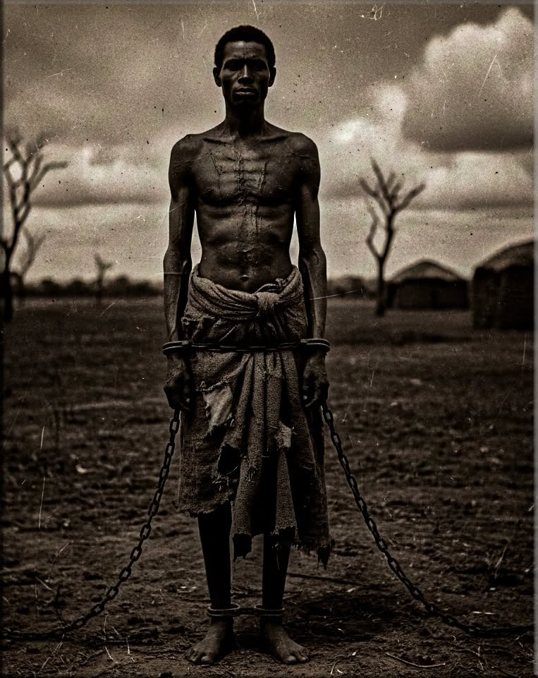

No sé de dónde vengo
No sé de dónde vengo,
pero mi rostro me da pistas:
el tamaño de mi boca,
el color de mi piel,
la forma de mis ojos.
También mis traumas,
la forma en que el mundo me ve
y la forma en que yo veo ese mundo.
No sé de dónde vengo.
Pero sé que no soy de donde estoy.
No soy.
No pertenezco.
Y cada día,
los míos
me hacen sentir ajeno.
Me dicen que somos inferiores,
que carecemos de inteligencia,
que no apostamos al progreso,
que somos marginales,
casi animales irracionales,
estorbo de la historia.
Y en medio de todo,
algo dentro de mí pregunta:
¿Qué tuvo que pasar
para que pensemos eso de nosotros mismos?
¿Por qué aprendimos a despreciarnos a nosotros mismos?
¿En qué momento perdimos la dignidad?
¿En qué momento comenzamos a odiar nuestra propia identidad?
Quizás no exista una sola respuesta.
Casi todo en la vida
tiene múltiples respuestas.
Quizás no conocemos nuestra historia.
Alguien más la contó por nosotros.
Nuestra piel dice
que somos de otro continente,
pero no hablamos su lengua.
Tenemos mucho de su cultura,
pero no adoramos los mismos dioses,
aunque tampoco tenemos claro
qué son los dioses.
Mis traumas me dicen
que no llegué a estas tierras
por voluntad propia.
Me dicen que me quitaron el alma,
que me degradaron
a una especie de máquina
con un motor integrado
que trabajaba hasta la muerte.
Mis traumas me dicen
que tuvieron que golpearme
para que abandonara mi idioma,
mis dioses,
mis creencias,
mi cultura
y mi forma de pensar.
Mi cuerpo me dice
que mi resistencia
es el resultado de un individuo
que tuvo que sobrevivir
a lo impensable
para sobrevivir al infierno
que es este lugar.
Así que no sé de dónde vengo.
A mis ancestros
no les permitieron decidir su rumbo.
Incluso jugaron con sus memorias.
Los golpes en su piel
marcaron un trauma
que, aunque los llevó
a olvidar de dónde venían,
dejó todas las pistas.
Nos quitaron hasta la dignidad,
pero dejaron huellas.
No existe el crimen perfecto.
Y, basándome en esas pistas,
voy a encontrar mi camino.
No puedo quitarme su idioma,
pero sí sus dioses.
No puedo cambiar mi rostro,
pero sí aceptar el mío.
No puedo negar mi fuerza,
pero sí aceptar mis debilidades.
Y quizás,
al no saber de dónde vengo,
no sepa a dónde regresar.
Pero puedo volver a ser lo que fui
sin tener un lugar al que regresar.
Solo tengo que deshacerme
de mis traumas.